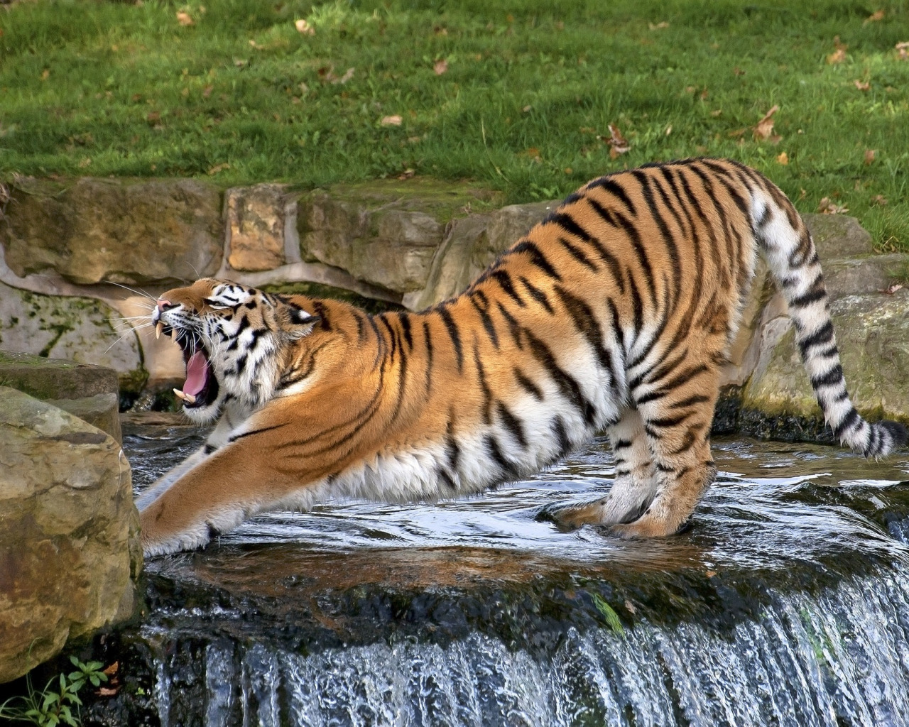
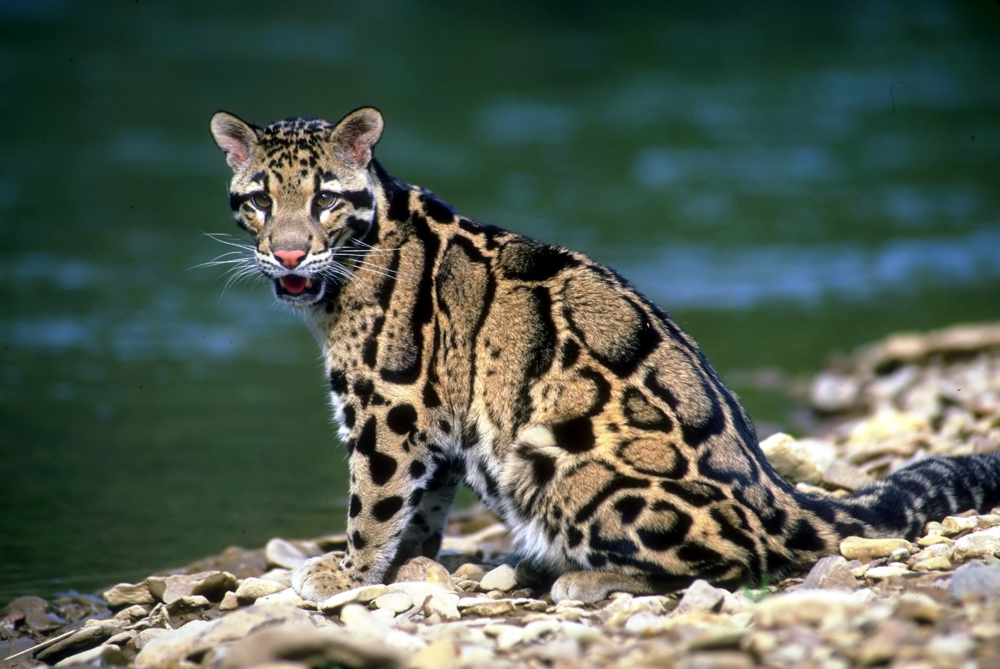
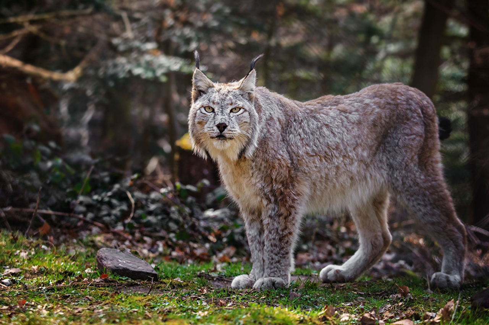
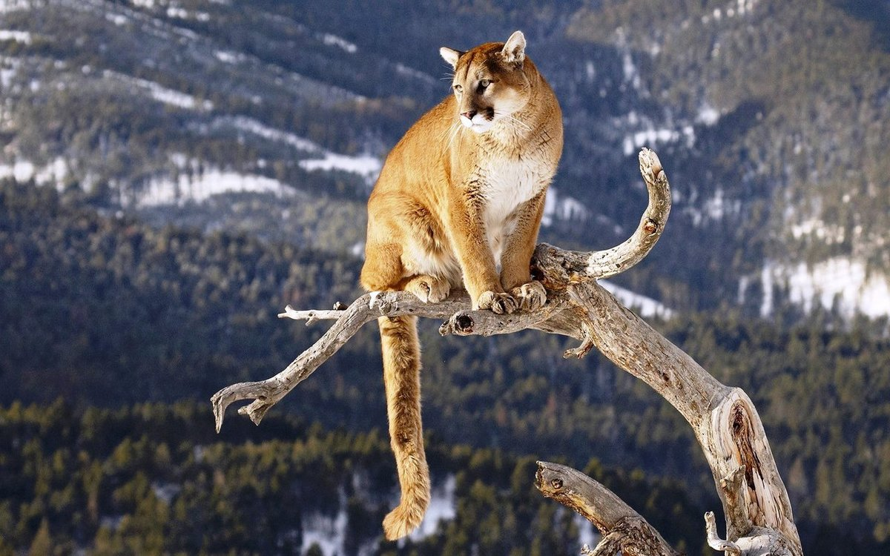

Амурский тигр
Амурский тигр относится к наиболее крупным подвидам. Шерсть гуще, чем у тигров, живущих в тёплых районах, а его окрас светлее. Основной окрас шерсти в зимнее время — оранжевый, а живот белый.
Это единственный подвид тигра, представители которого имеют на брюхе пятисантиметровый слой жира, защищающий от леденящего ветра при крайне низких температурах. Тело вытянутое, гибкое, голова округлая, лапы недлинные, хвост длинный. Уши очень короткие, так как он обитает в холодной местности. Амурский тигр различает цвета. Ночью он видит в пять раз лучше, чем человек.

Дымчатый леопард
Дымчатые леопарды живут поодиночке и передвигаются обычно в зарослях. Длинный хвост помогает им удерживать равновесие в нелёгкой для передвижения среде. Среди кошачьих дымчатые леопарды лучше всех умеют лазить по деревьям. Также они хорошо плавают. К их добыче относятся олени, кабаны, обезьяны, птицы, козы, рептилии. Своих жертв они поджидают на ветках и неожиданно прыгают на них сверху.

Рысь
Рысь — типичная кошка, хотя величиной с крупную собаку, которую отчасти напоминает своим укороченным телом и длинноногостью. Очень характерна голова рыси: сравнительно небольшая, округлая и очень выразительная. От других кошачьих рыси отличаются коротким хвостом и кисточками на концах ушей. Масса тела рыси от 5 до 30 кг.

Пума
Пума — четвёртый по величине представитель семейства кошачьих в мире, и второй — в Америке; крупнее неё только тигр, лев и ягуар. Эта кошка достигает в длину 100—180 см, при длине хвоста 60—75 см, высоте в холке 60—90 см и весе до 105 кг (самцы). Обычный нормальный самец крупного подвида весит около 60—80 кг. Самки мельче самцов приблизительно на 20-30 %.